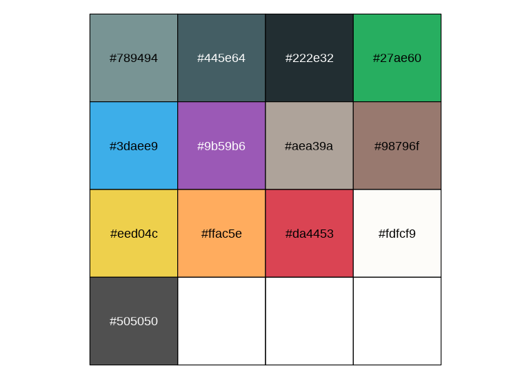
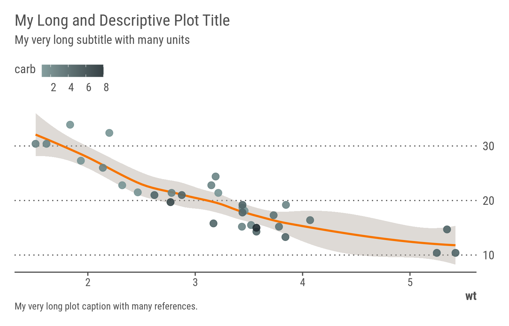
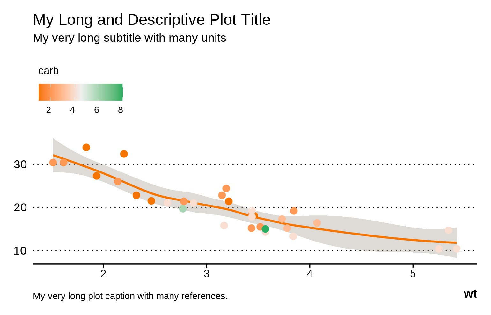
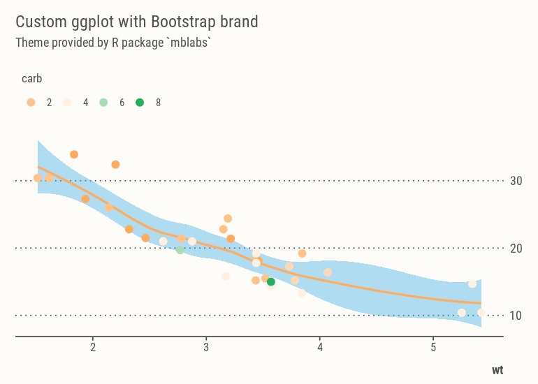

This blog is being migrating to Quarto, expect quirks and dead links!
Time to Migrate this Blog from Distill to Quarto
Mastering Quarto Markdown for literate programming, technical writing, and web publishing
quarto
dataviz
Author
Melanie BACOU
Published
October 1, 2023
Modified
July 11, 2025
Abstract
A post about literate programming in general and Quarto formats in particular, in which I document migrating this personal blog from Distill to Quarto. Compared to J.J. Allaire’s Distill for R Markdown, Posit® Quarto Markdown uses a new templating system built on top of Bootstrap v5.3.1 with new page and content layouts, extended export formats, and more flexible publishing workflows. This post briefly outlines my process for creating a custom Bootstrap theme for this revamped website, and design tweaks I made along the way.
With the release of Quarto 1.4 (in 2023), markdown-based publishing is gaining popularity, way beyond the scientific community. Multilingual text-based publishing formats (such as Emacs org-mode, Rmarkdown and Jupyter notebooks) that combine executable code chunks with formatted prose greatly simplify the process of drafting, iterating, compiling, documenting, sharing and reproducing computable research experiments.
No other reason for this map below but to showcase Quarto’s new content layout features – I am a fan of Soviet-era classic topo styles. Check out Russian cartography, it is stunning work.
This margin note uses a custom <div class="column-margin bg-info-subtle text-info px-2"> making use of both Quarto and Boostrap’s CSS utilities.
The margin column is responsive, content will be moved to the body column on smaller display sizes.
Old-time researchers and engineers have long used Emacs Org-Mode (along with its wild hordes of keyboard shortcuts) to achieve similar results thanks to Eric Schulte’s incredible Babel extension (see Schulte et al. 2012) and to John MacFarlane’s Pandoc document converter library – but nowadays Quarto makes use of more efficient script parsers and optimized runtime engines (Sass, Deno, V8) as well as in-browser real-time rendering of documents.
In the process of migrating old articles and code notebooks to the Quarto markdown syntax, I used this article as a template to build a complete Bootstrap theme for the revamped website. This article helped me finetune content placement and notebook execution. Feel free to reuse my assets/scss/theme.scss Sass file and other tidbits12.
1 For folks born this century, to babel (elips) or to sweave (R) is the process of compiling text documents that include both static markup and compile-time executable scripts.
The concept of Literate programming was introduced in 1984 by the mathematician Donald Knuth and was widely popularized thereafter in the engineering community thanks to org-mode in the Emacs editor.
Emacs Org-Mode was created by the astronomer Carsten Dominik in 2003 and remains to this day one of the most used and madly loved note-taking and GTD (Get-Things-Done) tools, with many of its functionality (agenda, tags, etc.) yet to be ported to any markdown engine.
2 Only keyboard, Baby!
CSS Grid System
One of Quarto’s many great features is the full flexibility of the Bootstrap v5.3 responsive grid system, with a few handy classes to help precisely position content in a document or on a web page. In particular Quarto now provides:
3 predefined (column-based) page layouts:
page-layout: full (home page)
page-layout: article (this document), and
page-layout: custom to use Boostrap CSS grid system
6 column classes to control content width (shown below)
2 margin classes to shift content into the left or right column (like that XKCD comics):
<div class="column-margin">, and
<span class="aside">
8 classes to overflow content into the left or right column
For example I use Quarto .column-page CSS class to place a flushed banner directly below the post header section, as a way to highlight static or dynamic content. Here is the R code chunk to achieve this, which generates a <div class="column-page"> element, similar to the map above.
```{r}#| column: pagelibrary(leaflet)leaflet(width="100%", height="15em") %>%addTiles() %>%addMarkers(-8.65406047010657, 41.14426475811268, label="Me, as I'm writing this post. Read on, tips below!", labelOptions=labelOptions(textsize="1rem"))```
Grid sizing and spacing are defined in _quarto.yml and may also be modified on a per-document basis, for example by setting:
There are new Quarto CSS classes to help control content width and placement.
.column-body
.column-body-outset
.column-page
.column-page-inset
.column-screen
.column-screen-inset-shaded
Finally any layout is achievable using stackable <div class="g-col-{width}"> CSS-Grid columns inside <div class="grid"> elements (see color boxes below). The full system summarized here, copied straight from Quarto’s online reference3.
Note that this table stretches across the right column thanks to Quarto column-page-right CSS class.
Color Scheme
Choosing a color scheme is relatively easy – you can for example start from your favorite photo or graphic and upload it to one of the many on-line color palette generators to extract dominant colors. Below I selected a standard 12-color palette that simply matches my decade-old Kubuntu desktop4.
4 KDE, 30 years later, still going strong! My personal KDE color scheme in QGIS and VSCode.
Another remarkable tool I have used in the past to generate sensible UI color schemes is themer.dev5 – this masterpiece of a library will generate consistent color schemes for Linux desktops and for many consoles, text editors, and IDEs. Check it out!
Moreover as of Quarto v1.6, the engine now allows for standard branding elements (colors, fonts) to be defined in standalone _brand.yml files on a per-document or per-project basis6.
6 The good folks at Posit further documented this new feature.
Note that brand.yml can also apply branding to ggplot2 and lattice graphs and charts via the thematic R package. This is the approach used in this blog. Below is the _brand.yml definition I created for this website.
_brand.yml
meta:name: Mel B. Labslink:home: https://mbacou.github.io/mb-labsgithub: https://github.com/mbacou/mb-labscolor:palette:white:"#ffffff"black:"#000000"blue:"#3daee9"purple:"#9b59b6"indigo:"#98796f"pink:"#aea39a"red:"#da4453"orange:"#ffac5e"yellow:"#eed04c"green:"#27ae60"teal:"#445e64"cyan:"#789494"dark:"#222e32"light:"#fdfcf9"gray:"#505050"darkgray:"#e7e2da"foreground: graybackground: lightprimary:"#fca5a5"typography:fonts:-family: Crimson Textsource: googleweight:[400,500]-family: M PLUS Code Latinsource: googleweight:[400,500]-family: Marck Scriptsource: googleweight:[400]base: Crimson Textheadings:family: M PLUS Code Latinmonospace:family: M PLUS Code Latin
The active Bootstrap color palette is rendered below.
“L’avenir nous tourmente, le passé nous retient. C’est pour ces raisons que le présent nous échappe.”
– Gustave Flaubert
Bootstrap built-in callout block and card components are readily available in Quarto Markdown with the standard 6 semantic colors.
Note that there are 6 types of callout blocks, including: default, note, warning, important, tip, and caution. This is the default callout style.
Note
This is a note.
::: callout-tip### Callout titleThis is an example of a **tip** callout with a title.:::
TipCallout title
This is an example of a tip with a title.
::: callout-caution collapse="true"### Expand to learn about collapseThis is an example of a 'collapsible' **caution** callout:::
CautionExpand to learn about collapse
This is an example of a collapsible caution callout box. You can use collapse="true" to collapse it by default or collapse="false" to make a collapsible callout that is expanded by default.
ImportantImportant
This is a callout with a header title.
WarningWarning
This is an important callout with a title.
Typography
Bootstrap default line-height and font sizing typically work, but I like to enforce a strict vertical baseline whenever possible7, so I make sure to define all vertical spacing and padding as multiple of a standard line height of $spacer.
7 About vertical rhythm amd why it matters for content readability, see Klaas Leussink article on his personal blog.
No additional changes to font definitions aside from using Crimson Pro and M+ Code fonts8. Here are bold, italic, and smaller text spans. Here is superscript and subscript text, and strikethrough notes. Semantic colors with e.g. .text-info provide accented text. I have added 2 background classes for my own use, a semi-transparent and blurred .shaded and a .striped. This theme uses .text-muted for all post metadata, for end- and margin-notes, and for captioning.
8 M+ font system was designed by Japanese artist Coji Morishita with extended support for Latin, Japanese, Cyrillic. It is an excellent monospace font for smaller display sizes.
Heading 2
Sample paragraph content.
Heading 3
Sample paragraph content with list of items:
List 1
List 2
List 3
Ordered list:
List 1
List 2
List 3
Finally a normal rule <hr/> element.
And a paragraph after the rule.
Heading 4
Sample paragraph content.
Blockquote title Blockquote content comes here… – Quote source / author or reference
Sample paragraph content after blockquote.
Heading 5
Here is a footnote reference9 and another much longer one10. Caption and footnote placement can be controlled in the config files _quarto_yml and/or _metadata.yml, or directly in the YAML front matter.
9 Here is a short margin note (footnote).
10 Here’s one with multiple paragraph blocks.
With subsequent paragraphs indented to show that they belong to the previous footnote.
Section 6
Headers at level 6 used as section dividers.
Tables
I prefer my tables to resemble LaTeX typesetting, so a few simple changes here.
Caption: my default table spacing
apple
2.05
pear
1.37
orange
3.09
Caption: smaller spacing borderless hover sm
fruit
price
apple
2.05
pear
1.37
orange
3.09
Caption: striped hover sm
fruit
price
apple
2.05
pear
1.37
orange
3.09
Caption: striped hover sm secondary
fruit
price
apple
2.05
pear
1.37
orange
3.09
knitr::kable(mtcars[1:6, 1:10])
A full-width table to increase content space
mpg
cyl
disp
hp
drat
wt
qsec
vs
am
gear
Mazda RX4
21.0
6
160
110
3.90
2.620
16.46
0
1
4
Mazda RX4 Wag
21.0
6
160
110
3.90
2.875
17.02
0
1
4
Datsun 710
22.8
4
108
93
3.85
2.320
18.61
1
1
4
Hornet 4 Drive
21.4
6
258
110
3.08
3.215
19.44
1
0
3
Hornet Sportabout
18.7
8
360
175
3.15
3.440
17.02
0
0
3
Valiant
18.1
6
225
105
2.76
3.460
20.22
1
0
3
Apply Themed Colors to R Graphics
As of writing, Quarto won’t automatically apply Bootstrap theme colors to dynamic graphics, so instead I define my own custom discrete and continuous scales for ggplot2 in an easy-to-share R package.
Show functions
./R/theme.R
#' @return vector of n interpolated colors#' @examples#' scales::show_col(brand.colors(alpha=1))#' scales::show_col(brand.colors(11, alpha=1, interpolate="spline"))#' scales::show_col(brand.colors(16))#' scales::show_col(brand.colors(4, alpha=.5))#'#' @exportbrand.colors <-function(n =NULL, colors =pal(), alpha = .9, ...) { omit =c("white", "black", "light", "gray")if(missing(n)) return(colors[!names(colors) %in% omit]) colors = colors[!names(colors) %in% omit]alpha(colorRampPalette(unname(colors), ...)(n), alpha)}#' Discrete color scale with Bootstrap colors#'#' Custom `ggplot2` discrete color scale to match active Bootstrap brand.#'#' @inheritDotParams ggplot2::discrete_scale#'#' @importFrom ggplot2 discrete_scale#' @seealso scale_labs_df#' @return a color scale#' @exportscale_brand_dc <-function(...) {discrete_scale("color", palette=brand.colors, ...)}#' Discrete fill scale with Bootstrap colors#'#' Custom `ggplot2` discrete fill color scale to match active Bootstrap brand.#'#' @inheritDotParams ggplot2::discrete_scale#'#' @importFrom ggplot2 discrete_scale#' @seealso scale_labs_dc#' @return a fill scale #' @exportscale_brand_df <-function(...) {discrete_scale("fill", palette=brand.colors, ...)}#' Continuous color scale with Bootstrap colors#'#' Custom `ggplot2` continuous color scale to match active Bootstrap brand.#'#' @inheritParams pal#' @inheritDotParams ggplot2::scale_colour_gradientn#' @importFrom ggplot2 scale_colour_gradientn#' @seealso scale_labs_cf#' @return a color scale#' @exportscale_brand_cc <-function(x =c("orange", "light", "green"), ...) {
Next I applied (slightly opinionated) changes to ggthemes::theme_foundation(), mostly transparent fills, condensed font, simplified axes, and a default y-axis on the right side.
These graphic customizations are documented in my own mb.themes R package. This helps with handling dependencies, code reproducibility, and because I want to use themes more flexibly across projects and clients. Obviously when visualizing scientific and spatial datasets the choice of color scales requires additional care.
Show function
./R/theme.R
args =list(bg=bg, fg=fg, accent=unname(accent), font=font_spec(font), sequential=sequential, qualitative=qualitative, ...)do.call(thematic_theme, args)}#' Bootsrap branded ggplot theme#'#' Opinionated `ggplot2` theme with unified Bootstrap branding using external `_brand.yml` configuration.#'#' @inheritParams ggthemes::theme_foundation#' @param base_bg plot, panel, legend background#' @param base_color color for text and line elements#' @param grid show gridlines `XY`, `X`, `Y` (default) or `n` for no gridline#' @param legend shorthand for `theme(legend.position="...")` (default: `top`)#' @inheritDotParams ggplot2::theme#'#' @return A ggplot2 theme#' @importFrom ggthemes theme_foundation#' @importFrom stringr str_detect#' @importFrom sysfonts font_families font_add_google#' @examples#' require(ggplot2)#'#' ggplot(mtcars, aes(factor(carb), mpg, fill=factor(carb))) +#' geom_col() +
Below we generate a couple of categorical and continuous ggplot2 and lattice plots using multiple Bootstrap color schemes (found in _brand.yml configs or modified here on-the-fly).
# Apply and check my new graphic themelibrary(ggplot2)library(mb.themes)# Load my (global) palette from Boostrap themep <-pal("../../_brand.yml")scales::show_col(pal())

# Use this Boostrap palette with ggplot2ggplot(mtcars, aes(factor(carb), mpg, fill=factor(carb))) +geom_col() +scale_brand_df(name="carb") +labs(title="My Long and Descriptive Plot Title", subtitle="My very long subtitle with many units", caption="My very long plot caption with many references.") +theme_brand()

ggplot(mtcars, aes(wt, mpg)) +geom_smooth(color=pal("orange"), fill=pal("pink")) +geom_point(size=3, aes(color=carb)) +scale_brand_cc() +labs(title="My Long and Descriptive Plot Title", subtitle="My very long subtitle with many units", caption="My very long plot caption with many references.") +theme_brand()

Instead of applyng theme_set(theme_labs()) globally, I prefer to use a custom ggplot function gglabs() that also modifies X and Y guides.
Note that the code chunk below will produce a PNG instead of SVG file. I also set a resolution of knitr fig-dpi: 220 globally in _quarto.yml so plots still look adequate when printed to paper.
```{r}#| fig-format: png#| classes: preview-imagegglabs(faithfuld, aes(waiting, eruptions, z=density), grid="XY") +geom_raster(aes(fill=density)) +geom_contour() +scale_brand_cf() +labs(title="Branded Contour Plot", subtitle="Moved Y-axis to the right, use Bootstrap-derived fill scale", caption="A very long plot caption with many notes and references." )```
gglabs(mtcars, aes(wt, mpg, color=factor(cyl))) +geom_point(size=4) +scale_brand_dc(name="cyl") +labs(title="Branded Dot Plot", subtitle="Moved Y-axis to the right, use Bootstrap-derived color scale" )

Similarly we make changes to lattice par() options. This is important as many advanced statistical and spatial libraries continue to favor base R graphics library.
A sample histogram in base R to demo my new color scheme
ggplot(faithfuld, aes(waiting, eruptions, z=density)) +geom_raster(aes(fill=density)) +geom_contour() +guides(y=guide_axis(position="right")) +labs(title="Branded Contour Plot", subtitle="Combined with thematic_on()", caption="A very long plot caption with many notes and references." ) +theme_brand()
A sample histogram in base R to demo my new color scheme
Publishing Workflow
Finally, the latest Quarto release adds perfectly sensible options to optimize everyone’s publishing workflow, in particular through the use of Draft and Freeze behavior:
draft: true
Tells Quarto that a document may (or may not) be listed / accessible to viewers, and prevents automatic re-tangling.
freeze: true
Tells Quarto to only re-tangle a document on content change, and not every time a site is rebuilt.
References
Schulte, Eric, Dan Davison, Thomas Dye, and Carsten Dominik. 2012. “A Multi-Language Computing Environment for Literate Programming and Reproducible Research.”Journal of Statistical Software 46 (3): 1–24. https://doi.org/10.18637/jss.v046.i03.
Citation
BibTeX citation:
@online{bacou2023,
author = {BACOU, Melanie},
title = {Time to {Migrate} This {Blog} from {*Distill*} to {*Quarto*}},
date = {2023-10-01},
url = {https://mbacou.com/posts/2022-12-01-theme/},
langid = {en},
abstract = {A post about **literate programming** in general and
Quarto formats in particular, in which I document migrating this
personal blog from {[}Distill{]}(https://rstudio.github.io/distill/)
to {[}Quarto{]}(https://quarto.org/). Compared to *J.J. Allaire’s
Distill for R Markdown*, **Posit® Quarto Markdown** uses a new
templating system built on top of Bootstrap v5.3.1 with new page and
content layouts, extended export formats, and more flexible
publishing workflows. This post briefly outlines my process for
creating a custom Bootstrap theme for this revamped website, and
design tweaks I made along the way.}
}
![]()


{kind=link}